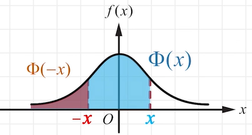
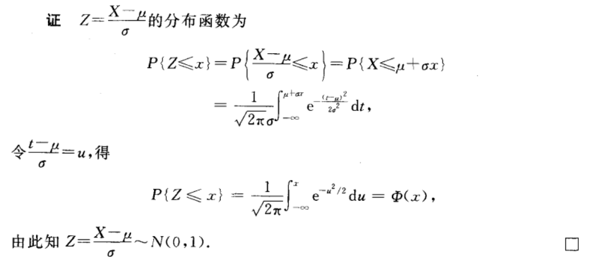
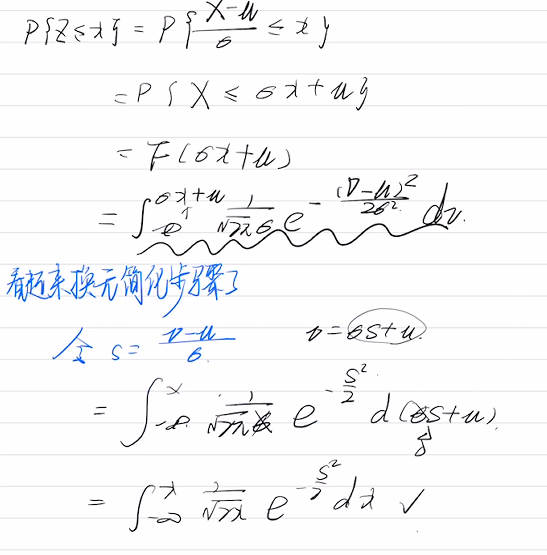
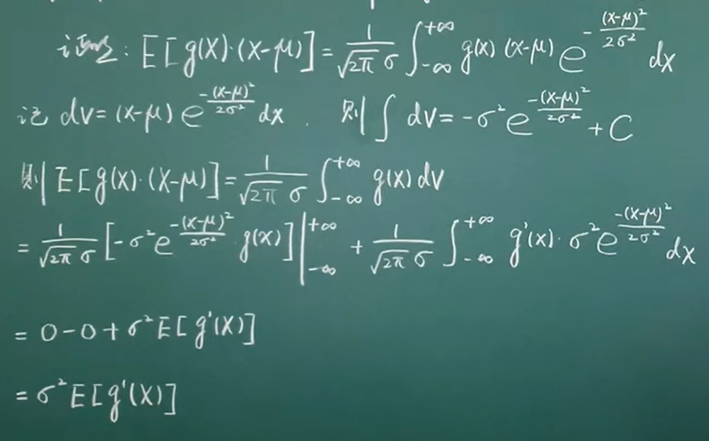
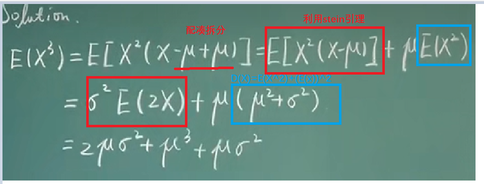
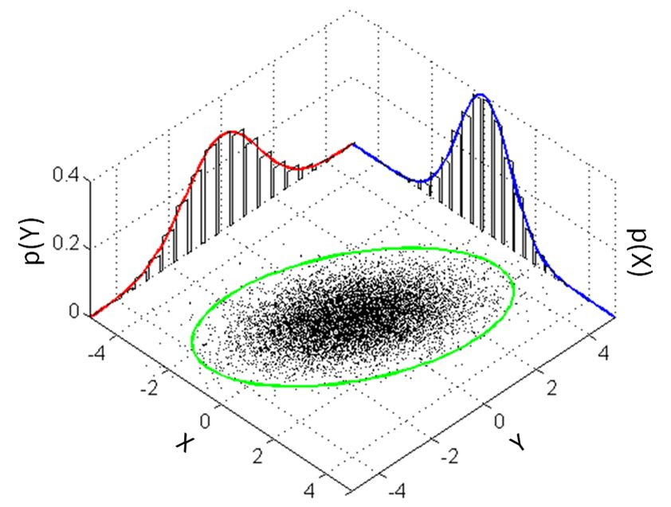
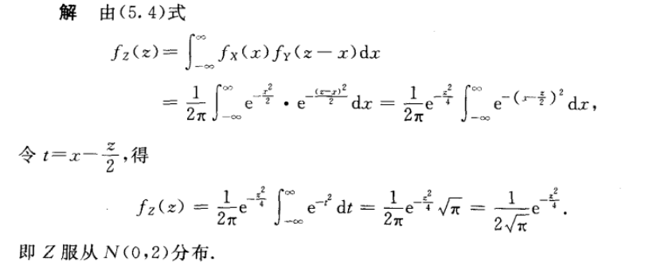

正态分布
【一维】X∼N(μ,σ2)
概率密度
f(x)=2πσ1e−2σ2(x−μ)2 概率计算公式
P(a<X≤b)=Φ(σb−μ)−Φ(σa−μ)P(X≤b)=Φ(σb−μ)P(X>a)=1−Φ(σa−μ) 性质
Φ(x)+Φ(−x)=1 
标准正态分布
概率密度
φ(x)=2π1e−t2/2 分布函数
Φ(x)=2π1∫−∞xe−t2/2 dt.Φ(−x)=1−Φ(x) 证明：

不太聪明的自己证明

数学期望μ
先利用代换Z=σX−μ标准化 E(Z)=2π1∫−∞∞te−t2/2 dt=2π−1e−t2/2∣∣−∞∞=0 E(X)=E(μ+σZ)=μ E(x)=∫−∞+∞xfx(x)dx=2πσ1∫−∞∞x⋅e−2σ2(x−u)2dx=t=σx−μ2πσ1∫−∞+∞(σt+μ)e−2t2⋅σdt使用了换元/正态分布的标准化=2π1[σ∫−∞+∞te−2t2dt+μ∫−∞+∞e−2t2dt]奇函数+偶Γ函数=μ 方差σ2
先利用代换Z=σX−μ标准化 D(Z)=E(Z2)=2π1∫−∞∞t2e−t2/2 dt=2π−1te−t2/2∣∣−∞∞+2π1∫−∞∞e−t2/2 dt=1 D(X)=D(μ+σZ)=D(σZ)=σ2D(Z)=σ2 已知X∼N(μ,σ2)，试求D(x)=? D(X)=E(X−E(X))2=∫−∞∞(x−μ)2fx(x)dx=2πσ1∫−∞∞(x−μ)2e−2σ2(x−μ)2dx=t=σx−μ2πσ1∫−∞+∞σ2t2e−2t2σdt=2πσ2∫−∞∞(−t)de−2t2=2πσ2[e−2t2∣∣−∞+∞−∫−∞+∞e−2t2e−2t2d(−t)]=2πσ2∫−∞+∞e−2t2dt=σ2 k阶中心矩
【预备】stein引理
设X∼N(μ,σ2)，且函数g(x)满足E(∣g′(x)∣)<+∞的可导函数，那么 E[g(X)(X−μ)]=σ2E[g′(X)] E[g′(X)]=∫−∞+∞∂x∂g(x)N(x∣μ,σ2)dx=(a)[g(x)N(x∣μ,σ2)]∣∣−∞+∞−∫−∞+∞g(x)∂x∂N(x∣μ,σ2) dx=∫−∞+∞σ2(x−μ)g(x)N(x∣μ,σ2)dx=σ21E[g(X)(X−μ)] 高阶期望


中心矩与原点矩
总结一下,设随机变量X服从正态分布N(μ,σ2),设其k阶中心矩为Ak,k阶原点矩为Bk,k为奇数时Ak=0, k为偶数时Ak=(k−1)⋅(k−3)⋯1⋅σk;而Bk=∑i=0kCkiμk−iAki 【二维】(X,Y)∼N(μ1,μ2,σ12,σ22,ρ)
概率密度f(x,y)=2πσ1σ21−ρ21exp{2(1−ρ2)−1[σ12(x−μ1)2−2ρσ1σ2(x−μ1)(y−μ2)+σ22(y−μ2)2]}
边缘概率密度
fX(x)=2πσ11e−2σ12(x−μ1)2,−∞<x<∞fY(y)=2πσ21e−2σ22(y−μ2)2,−∞<y<∞ f(x,y)=fX(x)fY(y)=2πσ1σ21exp{−21[σ12(x−μ1)2+σ22(y−μ2)2]}. 
Cov(X,Y)
Cov(X,Y)=E[(X−E(X))(Y−E(Y))]由E(Z)=E[g(X,Y)]=∫−∞∞∫−∞∞g(x,y)f(x,y)dx dy再强调一下 期望是一个数=∫−∞∞∫−∞∞(x−μ1)(y−μ2)f(x,y)dx dy=2πσ1σ21−ρ21∫−∞∞∫−∞∞(x−μ1)(y−μ2)×exp[2(1−ρ2)−1(σ2y−μ2−ρσ1x−μ1)2−2σ12(x−μ1)2]dy dx 令{t=1−ρ21(σ2y−μ2−ρσ1x−μ1)u=σ1x−μ1⇒{x=σ1u+μ1y=(1−ρ2t+ρu)σ2+μ2⇒{dx=σ1dudy=1−ρ2σ2dt. 那么Cov(X,Y)==2π1∫−∞∞∫−∞∞(σ1σ21−ρ2tu+ρσ1σ2u2)e−(u2+t2)/2 dt du2πρσ1σ2(∫−∞∞u2e−2u2 du)(∫−∞∞e−2t2 dt)+2πσ1σ21−ρ2(∫−∞∞ue−2u2 du)(∫−∞∞te−2t2 dt) 因为2πσ1σ21−ρ2(∫−∞∞ue−2u2 du)(∫−∞∞te−2t2 dt)是积分区域对称的奇函数所以2πσ1σ21−ρ2(∫−∞∞ue−2u2 du)(∫−∞∞te−2t2 dt)=0 为什么∫−∞∞u2e−2u2 du=2π? ∫0∞t2e−t2/2dtLet t2/2=sthen,I=2∫0∞s1/2e−sds=2Γ(3/2)=22π=2π 所以Cov(X,Y)=2πρσ1σ2(∫−∞∞u2e−2u2 du)(∫−∞∞e−2t2 dt)=2πρσ1σ22π⋅2π=ρσ1σ2 ρXY
ρXY=D(X)D(Y)Cov(X,Y)=ρ 这就是说, 二维正态随机变量 (X, Y) 的概率密度中的参数ρ就是 X 和 Y 的 相关系数, 因而二维正态随机变量的分布完全可由 X, Y 各自的数学期望、方差 以及它们的相关系数所确定. 若 (X, Y) 服从二维正态分布, 那么 X 和 Y 相互独立的充要条件为ρ. 现在知道ρ=ρXY, 故知对于二维正态随机变量 (X, Y) 来 说, X 和 Y 不相关与 X 和 Y 相互独立是等价的. 线性组合服从正态分布的两个条件
有限个相互独立的正态随机变量的线性组合仍然服从正态分布
若Xi∼N(μi,σi2)(i=1,2,⋯,n)，且它们相互独立,则它们的和Z=X1+X2+⋯+Xn Z∼N(μ1+μ2+⋯+μn,σ12+σ22+⋯+σn2) 例1设X和Y是两个相互独立的随机变量.它们都服从N(0,1)分布,其概率密度为fX(x)=2π1e−x2/2,−∞<x<∞,fY(y)=2π1e−y2/2,−∞<y<∞.求Z=X+Y的概率密度. 
若（X,Y）服从二维正态，且X，Y独立，则Z=X，Y的线性组合 服从一维正态